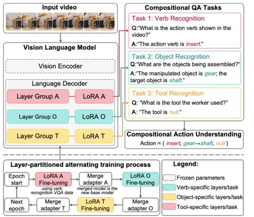
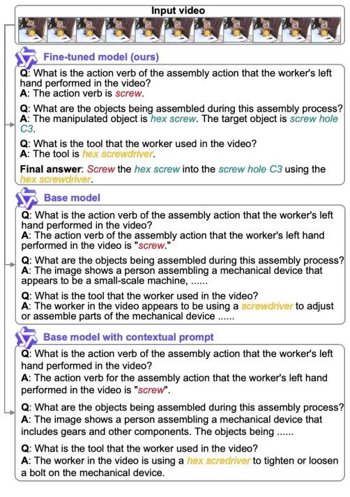

This paper attempts to use VLM to solve the "determinism" challenge in assembly action recognition, with a clear logic: decomposing actions into verbs, objects, and tools, then using template Q&A to force the model to output deterministically. CCFT indeed transforms the VLM from a "chatterbox" to a "reporter", suitable for industrial scenarios. However, the layer division of LP-AT is somewhat arbitrary, based on experience rather than theoretical derivation; tool recognition wins with just 4 layers, while verbs require 10 layers, making this allocation logic puzzling. Additionally, although freezing the visual encoder saves resources, the subtle hand-object interaction features of assembly actions are not fully exploited, which is somewhat like throwing away the baby with the bathwater. Overall, it is a decent benchmark, but still far from true "intelligent assembly"; do not expect it to handle unseen tools, and compositional prediction is sensitive to single-element errors.
Human-Robot Collaboration Assembly (HRC) requires robots to precisely understand human actions, but existing VLMs are mostly used for general scenarios, with outputs being generative and fuzzy, making it difficult to meet the stringent requirements for determinism in industry [1], [2]. Assembly actions involve subtle hand-object interactions, where visual similarity but semantic opposition (e.g., tightening vs. loosening) exists, and traditional action recognition methods struggle to capture this semantic ambiguity [3], [4]. Furthermore, existing datasets such as HA-ViD [7] and IKEA-ASM [8] lack structured VQA pairs and cannot directly adapt to the fine-grained reasoning needs of VLMs. Therefore, a method capable of decomposing semantics, outputting deterministic and interpretable results is needed to fill the gap of general VLMs in the manufacturing field.
The overall process converts assembly videos into compositional VQA tasks. First, CCFT decomposes actions into semantic elements such as Verb, Object, Tool, guiding the VLM to generate low-entropy answers through templated questions (e.g., "What tool is used in the video?") to ensure output determinism. The base model selected is Qwen2.5-VL; the visual encoder is frozen to save computational power, only fine-tuning the language decoder. The core innovation lies in the LP-AT strategy: dividing model layers into disjoint groups (e.g., layers 0-9 responsible for verbs, 10-23 for objects), assigning independent LoRA adapters [6] for each subtask. During training, each adapter is optimized alternately; after each update, it is merged back into the base model, then proceeding to the next subtask. This alternating mechanism avoids gradient conflicts between multi-tasks, while allowing hyperparameters (such as rank, learning rate) to be adjusted for different elements. Finally, the overall action is reconstructed by concatenating predicted elements, which is simple but effective.

Fig. 1: The Overall Framework of Compositional Context Fine-Tuning with Layer-Partitioned Alternating Training.
Tested on two datasets, HA-ViD-VQA and IKEA-ASM-VQA, comparing against strong baselines such as TSM [11], UniFormerV2 [13], VideoMAE V2 [14]. Metrics adopted are element-level and overall action accuracy. Results show the CCFT method consistently outperforms baselines in overall action recognition, e.g., HA-ViD left hand side view perspective reaches 46.27%. Ablation studies indicate that compositional fine-tuning improves average accuracy by about 2.33% compared to non-compositional; LP-AT outperforms shared adapters (improvement 5.31%); alternating training avoids catastrophic forgetting after merging independent training (independent training average drop 29.12%). Tool recognition accuracy is highest (>90%), verbs next, objects lowest, reflecting differences in task complexity. HA-ViD contains 4-element annotations, IKEA contains 2 elements, verifying the generalization of the method.

Fig. 2: Qualitative Comparison of Assembly Action Un- derstanding Outputs from Our Fine-Tuned Model, the Base Model, and the Base Model with Contextual Prompt. and subtasks (see Table IV). Compared to LP-AT (Table II), the shared adapter consistently yields lower performance, especially in object and holistic action recognition. This degradation can be attributed to the shared adapter’s inability to model the distinct learning dynamics and feature require- ments of each subtask, as all subtasks must adapt within a common parameter space. In contrast, our layer-partitioned strategy allows different network layers to specialize for individual subtasks via isolated adapters, improving learning efficiency and reducing representational conflicts. Moreover, since the shared adapter represents a